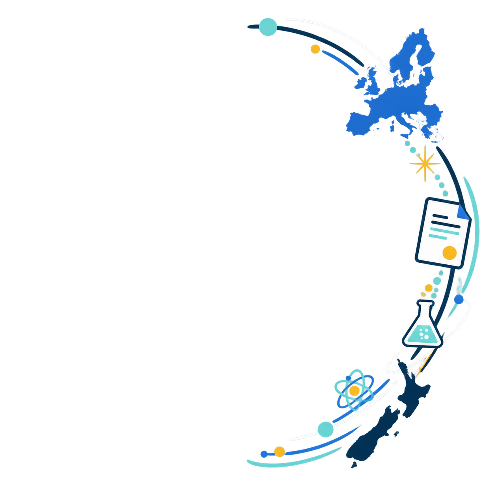
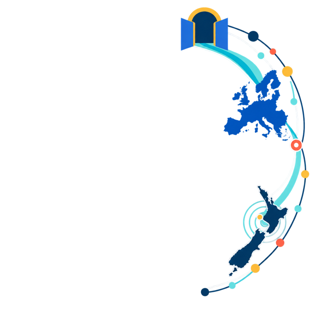
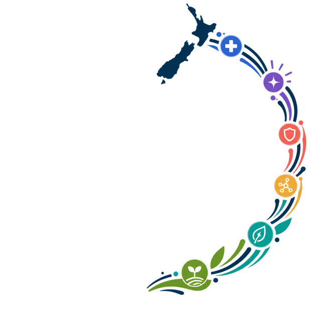

The EU's research and innovation programme
Ideas move through three connected pillars. Horizon Europe links frontier research, collaborative responses to global challenges and the journey from ideas to innovation.
Horizon Europe × Aotearoa New Zealand
Funding opens possibilities. The network multiplies them. New Zealand joined a research system built for international collaboration. Follow the journey from a long-standing relationship to a growing network of researchers, businesses and institutions.
Explore the storyHorizon Europe in 60 seconds
Ideas move through three connected pillars. Horizon Europe links frontier research, collaborative responses to global challenges and the journey from ideas to innovation.
The largest pillar is collaborative by design. International consortia bring universities, research organisations, businesses and public bodies together around shared challenges.
Association changes the terms of participation. New Zealand organisations can join and lead eligible consortia under conditions similar to organisations in EU Member States.
Six thematic gateways turn access into opportunity. Health, society, security, technology, climate and the bioeconomy provide routes into international collaboration.
New Zealand's path to Horizon Europe
Scroll through the milestones that progressively opened Pillar II to New Zealand researchers, organisations and businesses.
The European Union and New Zealand establish a formal framework for closer science and technology cooperation.
Read the agreement summary ↗
The European Commission and the New Zealand Government hold three rounds of exploratory talks. The discussions confirm a shared interest in taking research cooperation to the next level.
European Commission update ↗Commission President Ursula von der Leyen and Prime Minister Jacinda Ardern welcome the successful conclusion of the exploratory talks and signal their ambition to move quickly towards negotiations.
Joint media release ↗The EU and New Zealand complete negotiations on association, paving the way for New Zealand to become the first highly industrialised country outside Europe to join Horizon Europe.
European Commission announcement ↗Transitional arrangements allow New Zealand researchers and organisations to apply to Pillar II calls on equal terms before the Association Agreement is formally signed.
Transitional arrangements ↗The Association Agreement is signed in Brussels and provisionally applies from that day. New Zealand is formally associated to Pillar II—the programme's collaborative research and innovation pillar.
Association policy page ↗
More than 200 researchers, innovators and institutional partners gather in Christchurch, turning the new association into practical opportunities for collaboration.
Launch event report ↗New Zealand researchers, universities, research organisations and businesses can join—and lead—international Pillar II projects addressing shared global challenges.
Explore participation opportunities ↗Four projects move at once. d@rts, EU-CIEMBLY, VITAL and STELLA begin together—spanning culture, democracy, personalised health and plant resilience.

A network takes shape
Participation is broader than geography. Programme status provides the context; the active portfolio shows where collaboration is already happening.
Status follows the 2026–2027 General Annexes, the Commission’s association list and its guidance on EU outermost regions. Associated status takes precedence over income eligibility. Participation in a project does not by itself imply eligibility for EU funding. Status checked 31 August 2026.
From projects to a network
The durable asset is the network. Every consortium adds expertise, facilities, data and relationships that reach beyond a single grant. For a geographically distant country, collaboration makes the world smaller.